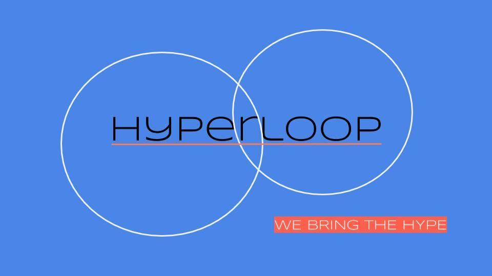
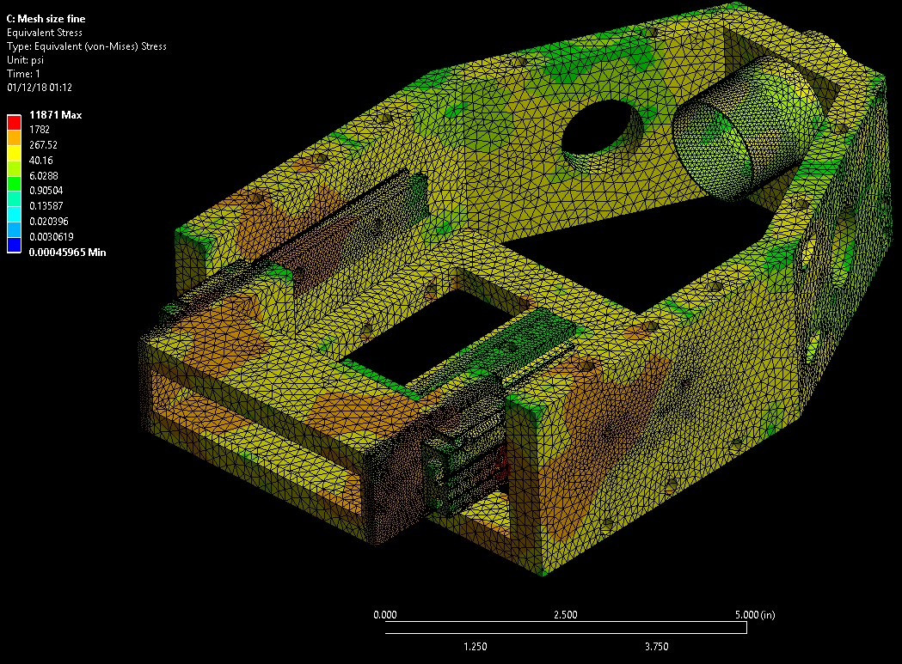
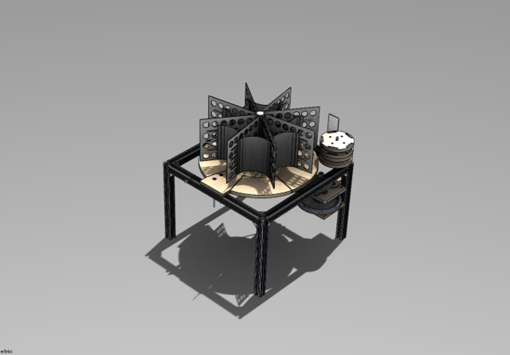

At The UC Davis Engineering Student Startup Center, I work as the Workshop Coordinator for the space. Which means that I am in charge of workshop scheduling, content and maintenence and management of the the equipment. The Equipment I have had experence with has enabled me to help students with countless projects including their seinor design projects, startup company products, and research projects. The equipment I've had experience with is listed below.
Construction of 3D printers.
 I've had the pleasure of learning how to construct desktop 3D printers. The printers I've had experience with utilizes repetier host, makerbot desktop, and the cura slicing engine as the software types for operating the printers. By working with a variety of different students from different backgrounds, I have been able to gain a lot of applicable practice with SolidWorks and AutoDesk 360 to help each student meet their design needs for their prototype.
I've had the pleasure of learning how to construct desktop 3D printers. The printers I've had experience with utilizes repetier host, makerbot desktop, and the cura slicing engine as the software types for operating the printers. By working with a variety of different students from different backgrounds, I have been able to gain a lot of applicable practice with SolidWorks and AutoDesk 360 to help each student meet their design needs for their prototype.
Troubleshooting printers from different manufactures all come with their own unique challenges, some hardware based, some software, and some a mixture of the two. Learning how to deal with this everytime a problem arises has taught me a lot about GCODE language, thinking creatively to handle different problems like 3D printing parts to act as placeholders for broken parts for example.
Experience with Shopbot and CNC programming
 Shopbot projects have present uniqe challenges by teaching me how to incorporate autodesk360 for 3D designs for student projects. On top of that I've been able to learn how to take into account different material types for my project designs, and how to use a tool outside of it's orginial desing parameters. I've created wing ribs, monitor casings, name plaques, prize plaques, and airfoil bed simulations, and motor mount casings with the shopbot. I've also taught several workshops on the shopbot's usage and project capabilities
Shopbot projects have present uniqe challenges by teaching me how to incorporate autodesk360 for 3D designs for student projects. On top of that I've been able to learn how to take into account different material types for my project designs, and how to use a tool outside of it's orginial desing parameters. I've created wing ribs, monitor casings, name plaques, prize plaques, and airfoil bed simulations, and motor mount casings with the shopbot. I've also taught several workshops on the shopbot's usage and project capabilities
Arduino and C programming
 As a mechanical engineering major, my coursework understandably only gave me so much to work with as far as electronics, and programming. So to expand my range of experience and abilities, I was able to experiement and construct different arduino projects by learning the arduino platform, and C programming. As a workshop coordinator I am currently in the process of creating an arduino robotics course to teach other students how understand the connectivity that between hardware and software.
As a mechanical engineering major, my coursework understandably only gave me so much to work with as far as electronics, and programming. So to expand my range of experience and abilities, I was able to experiement and construct different arduino projects by learning the arduino platform, and C programming. As a workshop coordinator I am currently in the process of creating an arduino robotics course to teach other students how understand the connectivity that between hardware and software.
Hyperloop at UC Davis
 The UC Davis Hyperloop Design team aims to participate in Elon Musk's Hyperloop Competition where we hope to build a pod that will travel the fastest in a vacuum sealed tube while competing against other colleges in this exciting endeavor. I am a sub-leader for the eddy brake system of the hyperloop pod. Eddy brakes are magnetic brakes that work off of the eddy effect that occurs when a non-magnetic metallic object passes through a magnetic field. I lead a sub-team consisting of 12 members organized into a design team, a controls team, and a research team. My hope for this group is not only to create a successful magnetic braking system for the pod, but also that each member of my sub team gains the valuable engineering experience in being a part of a multidisciplinary team and building something from concept to creation.
SolidWorks Experience
As an employee of the UC Davis Engineering Student Startup Cetner, it's my job and my pleasure to assist students with their variable design needs. These design needs usually fall into one of three categories: product design, research projects, and student design projects. These different design requests has given me experience in utilizing solidworks to fit a client's design requests. I've also gained experience with this software by working as the head designer for the Hyperloop Eddy Brake Sub team.
Magnetic Eddy Braking System
 I've definitley enjoyed my time as a sublead for the Hyperloop Team at UC Davis. During my time as a sublead, I've created a resarch team who looks the conceptual parameters that help to govern our design for the eddy braking system, and conduct experiemnts using an aluminum wheel setup coupled with a PASCO box to help our team determine the strength of our neodynium mangetic brakes. I've also created a Design Drafting team who has worked together nicely to go through iteration after iteration of a working design for our Eddy Brake System. Being their lead has driven me to learn new skills, technologies and software that I probably wouldn't have learned how to utilize otherwise. Both by leading this group, and working alongside my team members I've learned how to utlize ANSYS finite element Analysis, New Levels of SolidWorks, Fusion 360 CAM software, Lazer Cutting Technologes, Fatigue analysis, and more.
I've definitley enjoyed my time as a sublead for the Hyperloop Team at UC Davis. During my time as a sublead, I've created a resarch team who looks the conceptual parameters that help to govern our design for the eddy braking system, and conduct experiemnts using an aluminum wheel setup coupled with a PASCO box to help our team determine the strength of our neodynium mangetic brakes. I've also created a Design Drafting team who has worked together nicely to go through iteration after iteration of a working design for our Eddy Brake System. Being their lead has driven me to learn new skills, technologies and software that I probably wouldn't have learned how to utilize otherwise. Both by leading this group, and working alongside my team members I've learned how to utlize ANSYS finite element Analysis, New Levels of SolidWorks, Fusion 360 CAM software, Lazer Cutting Technologes, Fatigue analysis, and more.
The image to the left is a working design of our Eddy Braking system. This system utilizes the eddy effect which works off of Lenz's Law, which basically states that magnetic fields don't like change. The change in this case is an aluminum I beam moving through the field. Eddy Currents are produced in this I beam and these currents produce their own magnetic field, which induces a braking effect. This phenomenon will be used to slow down our Pod from high speeds without wearing down any of our components with physical contact.
AutoDesk Fusion360
Through my experience working with the UC Davis Engineering Student Startup Center, and by becoming a Sub-Lead for the Hyperloop Team at UC Davis, I have had the need to learn how to utilize the CAM and CAD software on Auto Desk Fusion 360 to make 3D dimensional cuts on equipment such as a shopbot CNC mill and a Bridgeport CNC mill.
ANSYS
 As a member of the Hyperloop team at UCD, it's been a great experience learning how to use the multi-physics simulation software ANSYS. Specifically for structural simulation and their transient magnetic simulator.
ReCyclone Automated Recycling Sorter
For my seinor design project, I am working on an automated recycling sorter as a part of a competition competing against Japan to see which team can develop a device that can separate aluminum, steel, plastic and glass bottles into their own separate bins the fastest, while restricted to using a single actuator.
Gearbox-Winch Assembly
 For my mechanical design course, myself and four other engineers worked together to design and build a Gearbox with a gear train value of 100 to increase the torque output of a Mabuchi 3V motor from 10.26 N*mm to 1026 N*mm, in order to lift a haul of text books weighing 105 Newtons up a ramp with a 70 degree incline. The design and manufacturing took place over 3 months. My primary roles included CAD designing, FEA simulation with SolidWorks, manufacturing of the ramp and gearbox, and failure analysis hand calculation
For my mechanical design course, myself and four other engineers worked together to design and build a Gearbox with a gear train value of 100 to increase the torque output of a Mabuchi 3V motor from 10.26 N*mm to 1026 N*mm, in order to lift a haul of text books weighing 105 Newtons up a ramp with a 70 degree incline. The design and manufacturing took place over 3 months. My primary roles included CAD designing, FEA simulation with SolidWorks, manufacturing of the ramp and gearbox, and failure analysis hand calculation